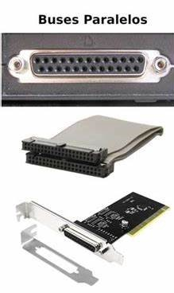

Existen dos grandes tipos clasificados por el método de
envío de la información: paralelo o serial.
Hay diferencias en el desempeño y hasta hace unos años se consideraba
que el uso apropiado dependía de la longitud física de la
conexión: para cortas distancias el bus paralelo, para largas el serial.
BUS PARALELO
Es un bus en el cual los datos son enviados por bytes al mismo tiempo,
con la ayuda de varias líneas que tienen funciones fijas.
La cantidad de datos enviada es bastante grande con una frecuencia
moderada y es igual al ancho de los datos por la frecuencia de función
computadores ha sido usado de manera intensiva, desde el bus del procesador,
los buses de discos duros, tarjetas de expansión y de vídeo,
hasta las impresoras.
El Front Side Bus de los procesadores Intel es un bus de este tipo y como
cualquier bus presenta unas funciones en líneas dedicadas:
Las Líneas de Dirección con el que se desea establecer comunicación.
Las Líneas de Control son las encargadas de enviar
señales de arbitraje entre los dispositivos. Entre las más
importantes están las líneas de interrupción,
DMA y los indicadores de estado.
Las Líneas de Datos trasmiten los bits, de manera que por lo
general un bus tiene un ancho que es potencia de 2.
Un bus paralelo tiene conexiones físicas complejas, pero la lógica
es sencilla, que lo hace útil en sistemas con poco poder de cómputo.
En los primeros microcomputadores, el bus era simplemente la extensión del
bus del procesador y los demás integrados “escuchan” la línea de direcciones,
en espera de recibir instrucciones. En el PC IBM original, el diseño del bus fue
determinante a la hora de elegir un procesador con I/O de 8 bits (Intel 8088),
sobre uno de 16 (el 8086), porque era posible usar hardware diseñado para otros
procesadores, abaratando el producto.
